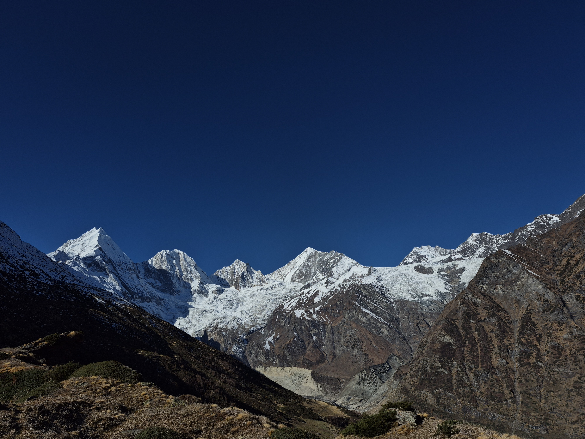
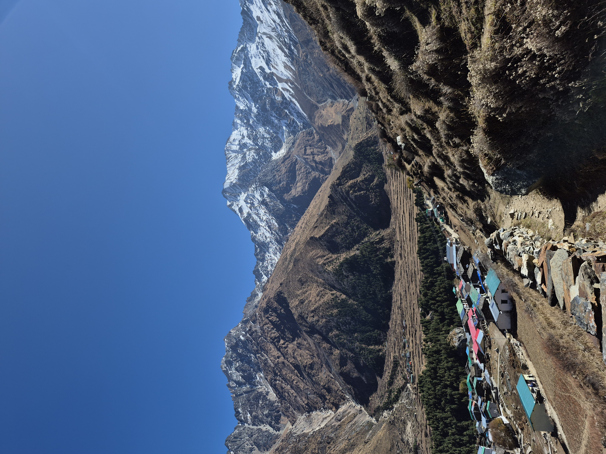
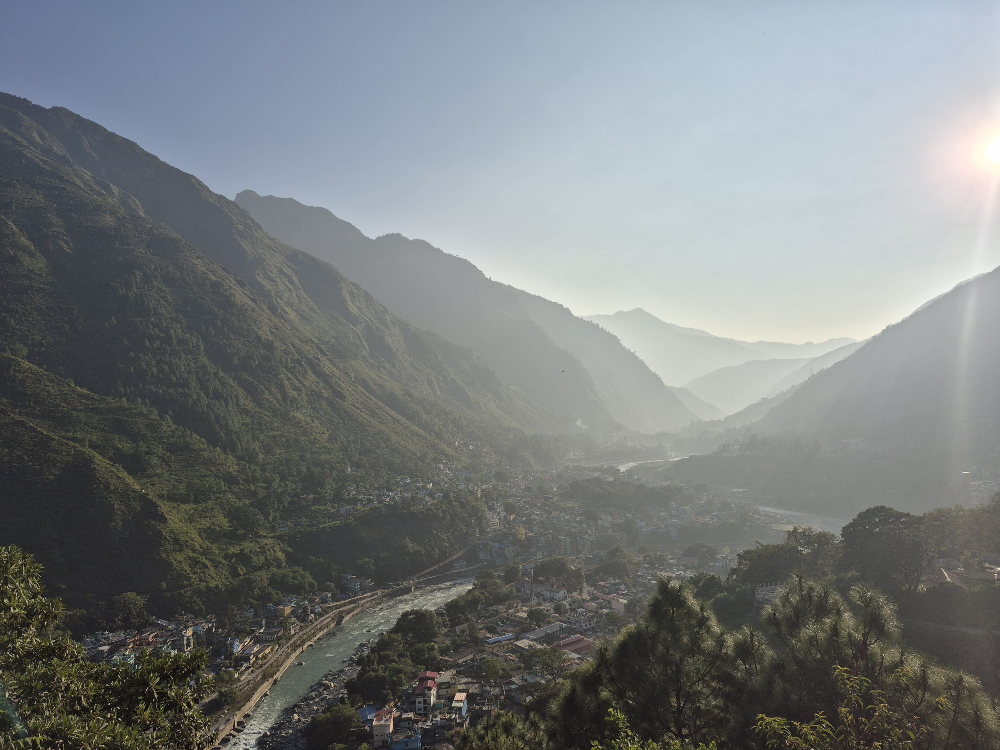

Hidden in the remote Kumaon Himalayas of Uttarakhand, Darma Valley is one of India's most breathtaking yet lesser-known mountain destinations. Surrounded by glaciers, alpine meadows, and traditional Himalayan villages, the valley offers a rare opportunity to experience untouched nature and local culture. In this Darma Valley travel blog, I share my personal journey starting from Pithoragarh, trekking toward the stunning Panchachuli Peaks, and discovering the unique lifestyle of people living in this remote Himalayan region. If you enjoy offbeat travel, Himalayan trekking, and cultural exploration, Darma Valley is a destination worth discovering.
My journey began in Pithoragarh, a beautiful Himalayan town often called the gateway to eastern Kumaon. From here, the road leads toward Dharchula, a small border town near Nepal, and then deeper into the mountains toward Darma Valley. The drive itself feels like an adventure. As the road climbs higher, the scenery transforms into dramatic landscapes—steep cliffs, rushing rivers, dense forests, and distant snow-covered mountains. The further you travel, the quieter and more peaceful everything becomes. Eventually, the road leads into the stunning Darma Valley, where small villages sit quietly under the towering Himalayan peaks.
The valley is home to several traditional Himalayan villages such as Dantu, Duktu, Nagling, and Sela. These villages are mainly inhabited by the Bhotia (Shauka) community, who have lived in the high Himalayas for centuries. The lifestyle here is simple and deeply connected to nature. Most families depend on farming, livestock, and seasonal tourism. Travelers often stay in homestays run by local families, where they experience traditional Himalayan hospitality and home-cooked food.

Walking through these villages feels like stepping into another world—stone houses, prayer flags fluttering in the wind, and the sound of rivers echoing through the valley.One of the most exciting parts of my journey was trekking toward the majestic Panchachuli Hills, which dominate the skyline of Darma Valley. The Panchachuli Peaks consist of five snow-covered Himalayan summits rising dramatically above the valley. The trekking trails around villages like Duktu and Dantu offer some of the best views of these mountains. During the trek, I experienced:
The Panchachuli Peaks are not only beautiful but also deeply connected to ancient Indian mythology. According to local legends related to the Mahabharata, the five peaks represent the five Pandava brothers. The name “Panchachuli” roughly translates to “five cooking hearths.” It is believed that after the Kurukshetra war, the Pandavas passed through this region during their final journey toward heaven. Before beginning their ascent into the higher Himalayas, they stopped here and cooked their last meal together. Each of the five peaks is said to symbolize one of the Pandava brothers. Because of this story, the mountains are considered sacred by many locals. When you stand in the valley and look up at the five peaks, it’s easy to understand why these mountains hold such spiritual significance.

If you plan to visit Darma Valley or trek near Panchachuli Hills, these tips will help: Pack Warm Clothing Even during summer, nights can become very cold in the Himalayas. Carry Basic Medicines Medical facilities are limited in remote mountain villages. Expect Limited Network Mobile connectivity and internet access are very limited in the valley. Respect Local Traditions The mountains and surrounding areas hold spiritual importance for local communities. Travel Sustainably Avoid plastic waste and help keep this beautiful valley clean.